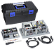
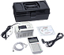
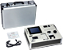
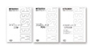

MELSEC-F Series Pelatihan

Belajar PLC membutuhkan banyak pengalaman dan pengetahuan.
Materi pendidikan berdasarkan tingkat pengetahuan, dari mereka yang belum pernah menggunakan PLC hingga mereka yang ingin meningkatkan penguasaan PLC, tersedia untuk seri mikro PLC FX.
Perangkat demo PLC
| Model | Gambaran Umum | |
|---|---|---|
|  | FX-I/O-DEMO2 To be discontinued |
PLC basics demo kit using FA input/output devices
|
|  | FX3U-32MR-SET Discontinued |
Simple system equipment for confirming operation of basic and applied instructions
|
|  | FX3U-32MT-SIM3H Discontinued |
Equipment for learning PLC basics and data handling/high speed processing/analog control
|
Buku teks untuk mempelajari PLC
Cara tercepat untuk menguasai PLC adalah memahami poin-poin penting melalui praktik berdasarkan contoh selain penjelasan teknis.
Setelah mulai menjual PLC, Mitsubishi Electric menyelenggarakan sekolah PLC di seluruh negeri. Berdasarkan pengalaman ini, poin-poin untuk mempelajari PLC telah disusun menjadi buku teks yang mudah dipahami.
| Model | Text title | |
|---|---|---|
|  | FX-NYUM-TEXT2 | Your First PLC Introduction |
| FX3U-PROG-TEXT2 | Discovering Control | |
| FX3U-POS-TEXT | POSITIONING CONTROL TRAINING MANUAL | |